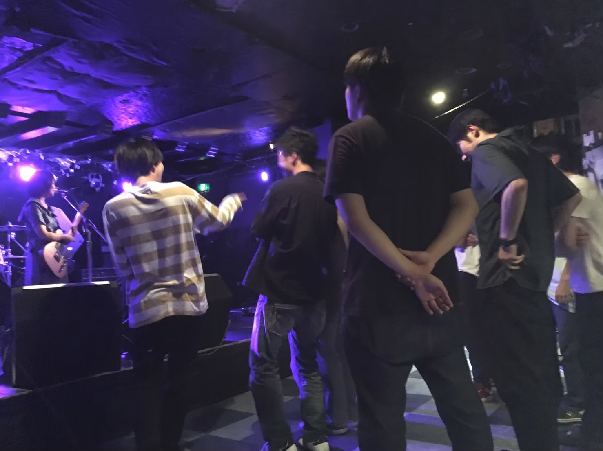

3月
- 卒業ライブ
4年生最後となる卒業ライブです。4年生と最後にバンドを組むチャンスです。お酒を飲みながら、楽しく最後のライブを行います！

*年度により変動があります
新入生に向けた軽音４団体合同のライブです！4団体の違いが分かりますよ！
新しく入部してくれた子達をバンドに迎え、部内ライブを行います。バンドの楽しさをいきなり味わうことことが出来ます
学生ホール2階にて、単独ライブを行います。新入生にとっては、初めてお客様に演奏を見てもらえる機会になります。
八王子駅前のライブハウスを借りてライブを行います。学生以外のお客様も自分たちの演奏を見ることが出来ます ライブハウスのスタッフの方々が音響・照明をしてくださり、プロさながらのステージを楽しむことが出来ます
年間行事の中でも目玉イベントの夏合宿です
心配することなかれ、ただ楽しい4泊5日の音楽漬け合宿です！
練習スタジオ付きのホテルに宿泊し、最終日にむけて、朝から深夜まで好きなだけバンド練習をすることが出来ます
最終日の部内ライブは練習を重ねた様々なバンドを楽しむことができ、間違いなく一番の思い出になります
10月の創大祭ライブの出演バンドを決めるため部内オーディションを行います。熾烈な争いです
これまで培ってきた実力を存分に発揮できる場です。様々なお客様に演奏を見ていただくことが出来ます
12月に行われる、定期演奏会のオーディションを行います。熾烈な争いです
八王子駅前の市民ホールを借り、定期演奏会を行います。年間のライブでは一番大きなステージで演奏することが出来、4年生にとっては集大成の場と言えます
4年生最後となる卒業ライブです。4年生と最後にバンドを組むチャンスです。お酒を飲みながら、楽しく最後のライブを行います！